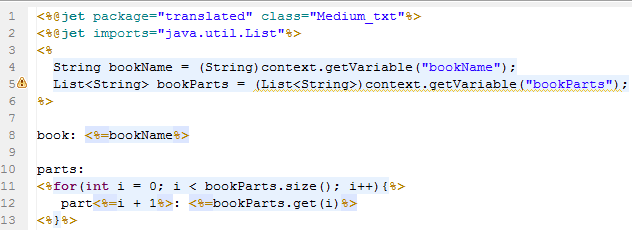

In the early stage of jsp, asp, php development, many projects do not have "front backend" of web site design. Business logic, database query code written in <%%> or <??>. With the development of various frameworks, the project will be divided into the front and backend, jsp, asp, php only write display code, the background to write business logic, database query.
Similarly, we do not advocate writing business logic in the jet template, which can make the pages redundant and unsightly.
As follows, output Harry, Potter title and list.
Result:

This is action, that is, a Java class. Put all the business logic here!

After using action, is the same result much simpler?
Get the variable from context.

Of course, you can also use the action + tag, which is perfect!

You can specify action here to get the code prompt.
Press the prompt key (such as Alt+/) to prompt all variables.

The variables in the tag use the Ognl extension to freely use the properties and methods of the variables (String here).
You can display the value by selecting the mouse or placing it in the corresponding position.

Right click, in New, select Jmr Action, or in Other find the JMR directory.

Enter the name MyAction, and click Finish.

If the current project does not add the library of Jmr
After you click Finish, click OK to import the Jmr library.
The Jmr library will be added to the project, which, like the Junit library, exists only in the project development environment and does not affect the dependency structure of the project.

In the Action column of the task, click Browse
In the pop-up view box, match all Jmr Action and select MyAction.
In this case, action is set up in the task.
The structure of action is simple, providing container context in the execute method. Just set the variables that you want to pass to context.

You can set variable and global variable in context.

About the context set variables, please read:
If you want the code prompt, you can select the Action you want;
You can get of these variables in tag.

More about tags, please read: